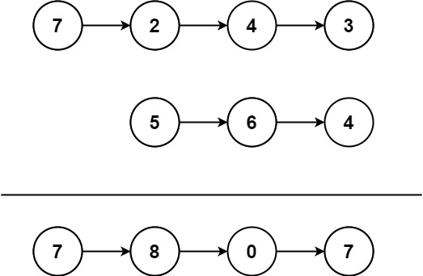

445. 两数相加 II
两条链各自压栈，弹出时正好从个位加起；结果用头插法建链，先算出的低位自然排在后面。
思路
- 数字高位在链头，无法直接从个位对齐：各自整条压栈，弹出顺序就是个位 → 高位。
- 每轮弹两个栈顶相加（缺位当 0），本位
sum % 10、进位sum / 10；栈都空但还有进位也要再来一轮。 - 头插法：
head = new ListNode(sum % 10, head)，后算出的高位自然排在链头。
图解
最优解
1import java.util.*;2 3class Solution {4 public ListNode addTwoNumbers(ListNode l1, ListNode l2) {5 // 高位在链头：整条压栈，弹出来正好从个位加起6 Deque<Integer> s1 = new ArrayDeque<>(), s2 = new ArrayDeque<>();7 for (ListNode p = l1; p != null; p = p.next) s1.push(p.val);8 for (ListNode p = l2; p != null; p = p.next) s2.push(p.val);9 // head 指向已建好的结果链；头插法让先算出的低位自然排在后面10 ListNode head = null;11 int carry = 0;12 // 缺位当 0；两栈都空但还有进位时也要再走一轮13 while (!s1.isEmpty() || !s2.isEmpty() || carry != 0) {14 int sum = carry;15 if (!s1.isEmpty()) sum += s1.pop();16 if (!s2.isEmpty()) sum += s2.pop();17 head = new ListNode(sum % 10, head);18 carry = sum / 10;19 }20 return head;21 }22}题目
给你两个 非空 链表来代表两个非负整数。数字最高位位于链表开始位置。它们的每个节点只存储一位数字。将这两数相加会返回一个新的链表。
你可以假设除了数字 0 之外，这两个数字都不会以零开头。
示例1：

输入：l1 = [7,2,4,3], l2 = [5,6,4] 输出：[7,8,0,7]
示例2：
输入：l1 = [2,4,3], l2 = [5,6,4] 输出：[8,0,7]
示例3：
输入：l1 = [0], l2 = [0] 输出：[0]
提示：
- 链表的长度范围为
[1, 100] 0 <= node.val <= 9- 输入数据保证链表代表的数字无前导 0
进阶：如果输入链表不能翻转该如何解决？
题面取自力扣当前版本。
数据快照 2026-11-04。题面版权归力扣所有，本站点仅供本人学习使用，请勿对外发布。